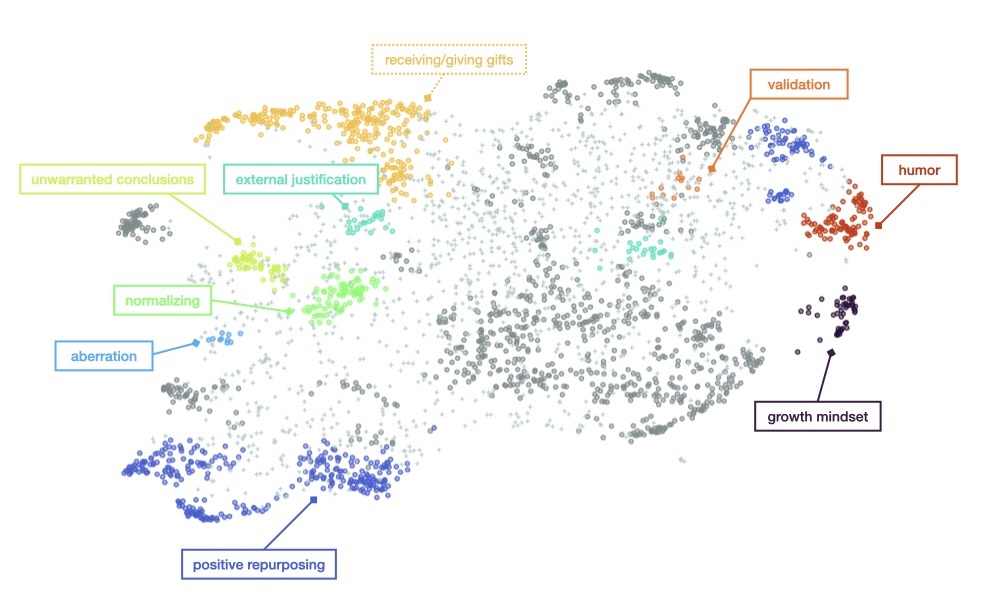

Different types of positive rethinking - different outcomes?
There is variability in how people approach reappraisal
Reappraisal, or positive rethinking, is an emotion regulation strategy, where people focus on positive aspects of presumably negative emotional situations.
What positive aspects could you find in your friend's rejection of your gift?
People approach reappraisal differently. For example, when your friend rejects your gift, you could think that they had good reasons such as allergies to reject the gift, or you could think that they didn't understand the gift was supposed to be a show of thanks.
To date, we have little knowledge about the techniques that people use to reappraise and whether they differ in their effectiveness.
Computational modeling reveals eight different reappraisal techniques
In a study comparing the reappraisal ability of humans against GPT-4, we collected a large dataset of reappraisal attempts with respect to six emotional vignettes. We asked both GPT-4 and humans to provide reappraisal suggestions to descriptions of negative scenarios and had an independent sample rate their effectiveness, novelty, specificity, and empathy.
Using a novel method to reveal dimensions of psychological constructs from text, the Construct Mining Pipeline, we inferred classes of reappraisal techniques. The method uses a pipeline of sentence embeddings, dimensionality reduction and clustering, with several validation steps to group reappraisals into distinct types.
Using computational methods, we found eight distinct reappraisal techniques (as detailed in our preprint).

Reappraisal types: What's better, what's worse?
Using the reappraisals' quality ratings, our next step includes relating reappraisal techniques to quality. Preliminary analysis shows that such a relationship likely exists, however, more in-depth analyses are needed to make definite claims. Specifically, the Construct Mining Pipeline is well suited for identifying, not assigning classes. That said, more data labeling is needed to reliably map reappraisals to the applied techniques.
Preliminary analysis shows a relationship between reappraisal techniques and quality, while we are taking further steps to solidify that claim...